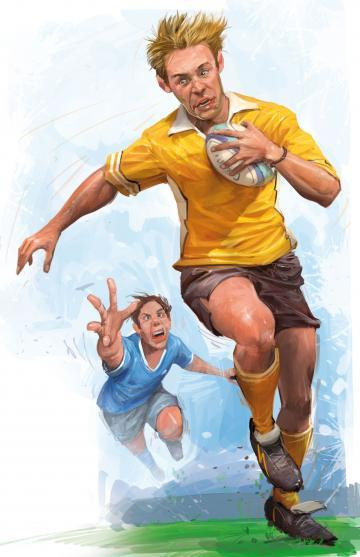

RUGBY HISTORY
 hugby fundamentalsRugby is a sport that aims to transport the ball across the field of play to the opposing team's goal line. His birth is attributed to a football match that took place at Rugby School, England, in 1823. In that match, the British student WILLIAM WEBB ran to the goal with the ball in his hands, an episode considered a milestone in this sport. The rules of rugby practiced in physical education classes in British schools were defined by each institution, being regulated only in 1846, on the initiative of Rugby Scool students. Thus, in 1871, the first dispute between countries took place, with the victory of the Scots over the English. Also in that year, the Rugby Football Union was founded, later named World Rugby, the sport's international regulatory body.
RUGBY GAME RULES

Rugby is played on a field 100m long and 70m wide. The match is divided into two halves lasting 40min or 7min each, depending on the type of game (Union or Sevens). These are basic aspects of rugby. However, to better understand the dynamics of this sport it is necessary to understand some fundamental rules.
pass the ball:as commented, the ball can only be passed backwards or to the side. Forward, only by way of a kick. However, during a kicked pass, the ball dispute can only take place by players who are behind the player who made the kick or by himself.
Try:is one of the four forms of scoring in rugby, accounting for five points. Here, the player must pass the in-goal line (also called the H) of the opponent's court and support the ball against the ground.is one of the four forms of scoring in rugby, accounting for five points. Here, the player must pass the in-goal line (also called the H) of the opponent's court and support the ball against the ground.
Conversion:it is a kick to the H to which the team is entitled whenever it makes a try, worth two points. For this, the ball is positioned on a support and a player performs the kick, causing it to pass between the posts of the H.
Penalty: it is the sanction applied to the team of the player who imputes a serious fault, being adopted the same procedure of the conversion in the kick. However, three points are considered for the hit of the kick.
Drop Goal:is a kick in which the player drops the ball to the ground so that it bounces before being kicked to the H. The drop goal can be made at any time during the game.
Tackle:only the athlete in possession of the ball may be tackled. In a high tackle (above the waist), the player can be punished. These are the main rules of rugby. By understanding them, you will be able to identify the moments and actions that give dynamics to sports matches.
Back to the top of the page